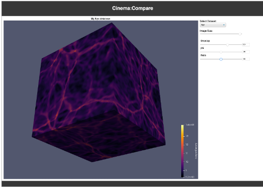

Cinema Examples
There are three main ways of using Cinema that are supported by the Cinema team and our partners. Here are examples of each.
Spreadsheet Examples
 |
Scientists often compile data about experiments in a table that maps parameters to results. These can easily be converted into a Cinema database. Download examples of spreadsheet-based databases from Cinema Examples. |
Application Export Examples
|  | Common analysis and visualization applications can output Cinema databases of whatever is being visualized. This results in a Cinema database that is ready to view. Download examples of application export databases from Cinema Examples. |
In-situ Export Example
For in-situ analysis workflows, capabilites can be integrated into science codes so that Cinema databases can be directly output from the simulation during execution. One supported way of doing this is through ASCENT. These in-situ workflows can be complex, so we support a repository of reproducible workflows through the Pantheon project. The Pantheon project provides:
A permanent working record of milestones. These workflows serve both as records of milestone work, and examples for future work.A set of reproducible workflow examples. Creating ECP-based workflows is complex, so working examples are a valuable product. We provide these examples as records of milestones, examples for experimentation and learning, and records of functioning workflows.Reproducibility for exploratory research. Early software development efforts have unique build requirements and suffer from inconsistent versioning practices. The focus of Pantheon is to capture the state of a working experiment, to demonstrate a proof of concept.